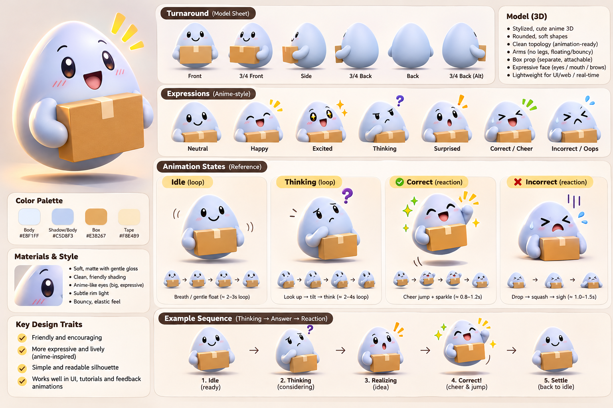

3D EM TEMPO REAL · MOCK VISUAL
Carregando personagem…
Expressões & movimento
Experimente as reações.
Flutuação suave, respiração e piscadas. Pronto para começar.
Modelo editável no Blender, exportado em GLB. Olhos, boca, caixa e braços são geometria 3D. Estudo visual, ainda sujeito a refinamento.
Voltar à bibliotecaPaleta da sua referência
Corpo · #E8F1FFSombra · #C5D8F3Caixa · #E3B267Fita · #F8E4B9
Referência fornecida
